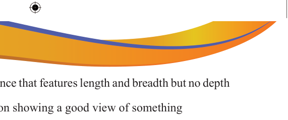

Two-dimension (2-D)an appearance that features length and breadth but no depth
A vantage pointa place or position showing a good view of something
Versatileability to adapt or be adapted to many different functions or activities
Visible lightthe segment of the electromagnetic spectrum that the human eye can view
Visual arta creative art whose products including painting and sculpture are to be appreciated by sight
Wavelengthdistance between identical points (adjacent crests) in the adjacent or successive crests or troughs of a wave
